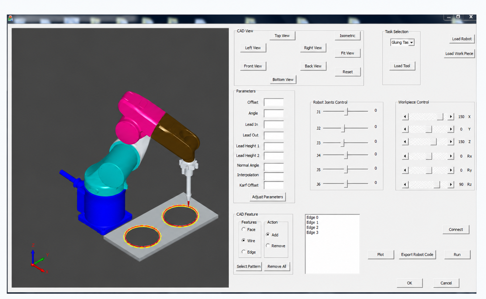

Industrial Robotics
Adaptive robotic solutions designed for repeatable, precise, and scalable industrial tasks.
ROBOTICS · AUTOMATION · MANUFACTURING
I am Amit Kumar Bedaka, a Robotics Research Scientist & Engineer developing practical robotic systems for industrial automation and advanced manufacturing.
AUTONOMY
PERCEPTION
PRECISION
INTEGRATION
About

ROBOTICS / AUTOMATION
A researcher grounded in application.
I am a PhD-qualified robotics engineer with over seven years of experience building intelligent automation systems for real-world industrial applications. I bridge mechanical design, simulation, and real-world robotic deployment.
I hold a PhD in Mechanical Engineering, specializing in Robotics & Automation, from the National Taiwan University of Science and Technology (NTUST). I am based in Barcelona and open to opportunities in robotics, automation, and AI-driven systems.
Research
Research directions
Adaptive robotic solutions designed for repeatable, precise, and scalable industrial tasks.
Bridging digital product definition and robot execution through intelligent offline programming workflows.
Combining sensing and spatial intelligence to help robotic systems perceive and navigate their environment.
Applying automation research to improve process quality, flexibility, and productivity on the shop floor.
Selected projects
Selected work
Selected project images and demonstration videos from my research work.
Industrial automation
A CAD-based offline-programming platform for six-axis and two-axis robotic welding, designed to move from part geometry to deployable robot paths.
Key contribution
Designed the software architecture, application interface, welding-path planning, and kinematic logic for the two-axis robot.
Capabilities
Technology C++ · Robotics · Path planning · CAD/CAM
Associated patent work: Welding System and Welding Parameter Optimization Method ↗
Perception & autonomy
A robot-inspection workflow that connects scanned RGB-D data with CAD models to define inspection positions and generate paths.
Key contribution
Developed the application interface, path-planning workflow, CAD alignment approach, and system testing.
Capabilities
Technology Python · C++ · RGB-D · 3D vision
CAD automation
A custom CAD software tool for extracting critical propeller geometry and connecting the output to an inspection workflow.
Key contribution
Designed the software, system architecture, user interface, and geometry-extraction algorithms.
Capabilities
Technology C++ · CAD APIs · UI development

Robot programming
A CAD-based programming interface that helps users define glue-dispensing tasks and generate industrial-robot motion more efficiently.
Key contribution
Designed the robotic software, application interface, path-planning workflow, and validation process.
Capabilities
Technology Robotics · CAD integration · Human-robot interaction
Publications
Knowledge shared
Journal and conference work in robotics, vision, manufacturing, and biomechanics.
Experience
Professional path
Sensable
Leading design and development of an assistive-technology product for people with visual impairments, including product design, CAD development, prototyping, and engineering integration.
Chordata Motion
Led R&D for an indoor positioning system for human motion capture, developing IMU-based estimation with ZUPT, PDR, and EKF and evaluating RF, VR-tracking, and vSLAM approaches.
CENZ Automation
Developed CAD platforms for propeller information extraction, autonomous inspection, and welding offline programming.
National Taiwan University of Science and Technology
Conducted research in robotic systems, automation, kinematics, intelligent engineering design, and CAD/CAM, connecting mechanical design with robotic implementation.
CURRICULUM VITAE
Contact
Start a conversation
I welcome conversations around robotics research, industrial automation, collaboration, and speaking opportunities.